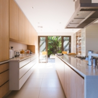
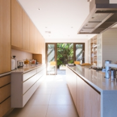

Nossas Massas
Minair

É uma massa fina do norte da suíça, que vem sendo passada há milênios, de geração em geração.
Lecoché

É uma massa fina do norte da suíça, que vem sendo passada há milênios, de geração em geração.
Austaili

É uma massa fina do norte da suíça, que vem sendo passada há milênios, de geração em geração.
Luluch
É uma massa fina do norte da suíça, que vem sendo passada há milênios, de geração em geração.
Conheça nosso Cardápio
Cardápio 
